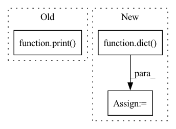

Pattern ID :36397
Before Change
best_acc = epoch_acc
best_model_weights = copy.deepcopy(model.state_dict())
print()
time_elapsed = time.time() - since
print("Training complete in {:.0f}m {:.0f}s".format(
time_elapsed // 60, time_elapsed % 60))After Change
print("-" * 10)
// 保存训练过程中误识别为正样本的负样本，用于下一次的训练
hard_negative_dict = dict()
hard_negative_dict["train"] = list()
hard_negative_dict["val"] = list()
// Each epoch has a training and validation phaseIn pattern: SUPERPATTERN
Frequency: 4
Non-data size: 3
Instances Fragment ID: 102993585
Project Name: object-detection-algorithm/r-cnn
Commit Name: e2e3096890edf6bc8a4f52bea2fe56624e20be2c
Time: 2020-03-04
Author: 505169307@qq.com
File Name: py/linear_svm.py
M Class Name: AnonimousClass
N Class Name: AnonimousClass
M Method Name: train_model(7)
N Method Name: train_model(7)
M Parent Class:
N Parent Class:
M File Name: py/linear_svm.py
N File Name: py/linear_svm.py
M Start Line: 125
M End Line: 125
N Start Line: 78
N End Line: 151
Before Change
print("========== collect results ==========")
print(self.rolling_online_manager.get_collector()())
print("========== signals ==========")
print( self.rolling_online_manager.get_signals())
def worker(self):
// train tasks by other progress or machines for multiprocessing
// FIXME: only can call after finishing simulation when using DelayTrainerRM, or there will be some exception.After Change
end_time=signals.index.get_level_values("datetime").max(),
strategy=strategy_obj,
)
analysis = dict()
analysis["excess_return_without_cost"] = risk_analysis(report_normal["return"] - report_normal["bench"])
analysis["excess_return_with_cost"] = risk_analysis(
report_normal["return"] - report_normal["bench"] - report_normal["cost"]
)
analysis_df = pd.concat(analysis) // type: pd.DataFrame
pprint(analysis_df)
def worker(self): Fragment ID: 102993584
Project Name: microsoft/qlib
Commit Name: b7988e6428ea99ce3c865eb5bb313760e26f8131
Time: 2022-03-18
Author: you-n-g@users.noreply.github.com
File Name: examples/online_srv/online_management_simulate.py
M Class Name: OnlineSimulationExample
N Class Name: OnlineSimulationExample
M Method Name: main(1)
N Method Name: main(1)
M Parent Class:
N Parent Class:
M File Name: examples/online_srv/online_management_simulate.py
N File Name: examples/online_srv/online_management_simulate.py
M Start Line: 87
M End Line: 87
N Start Line: 99
N End Line: 122
Before Change
rep_ex_config = dict(representation_learning)
rep_ex_config["root_dir"] = cwd
print( rep_ex_config)
il_train_ex_config = dict(il_train)
il_train_ex_config["root_dir"] = cwd
After Change
il_test_ex_config = dict(il_test)
tune_run_kwargs = dict(
num_samples=1,
resources_per_trial=dict(
cpu=5,
gpu=0.32,
))
_ = locals()
del _
Fragment ID: 102993579
Project Name: humancompatibleai/eirli
Commit Name: 483140c81f2cd315633e23b3aa657e7b6ce369b6
Time: 2020-08-30
Author: sam@qxcv.net
File Name: src/il_representations/scripts/pretrain_n_adapt.py
M Class Name: AnonimousClass
N Class Name: AnonimousClass
M Method Name: base_config(3)
N Method Name: base_config(3)
M Parent Class:
N Parent Class:
M File Name: src/il_representations/scripts/pretrain_n_adapt.py
N File Name: src/il_representations/scripts/pretrain_n_adapt.py
M Start Line: 108
M End Line: 125
N Start Line: 125
N End Line: 130
Before Change
rep_ex_config = dict(representation_learning)
rep_ex_config["root_dir"] = cwd
print( rep_ex_config)
il_train_ex_config = dict(il_train)
il_train_ex_config["root_dir"] = cwd
After Change
il_test_ex_config = dict(il_test)
tune_run_kwargs = dict(
num_samples=1,
resources_per_trial=dict(
cpu=5,
gpu=0.32,
))
_ = locals()
del _
Fragment ID: 102993578
Project Name: humancompatibleai/eirli
Commit Name: 885911b01564ec5f81644e5ceae8cc53bc85f3bd
Time: 2020-08-30
Author: sam@qxcv.net
File Name: src/il_representations/scripts/pretrain_n_adapt.py
M Class Name: AnonimousClass
N Class Name: AnonimousClass
M Method Name: base_config(3)
N Method Name: base_config(3)
M Parent Class:
N Parent Class:
M File Name: src/il_representations/scripts/pretrain_n_adapt.py
N File Name: src/il_representations/scripts/pretrain_n_adapt.py
M Start Line: 108
M End Line: 125
N Start Line: 125
N End Line: 130